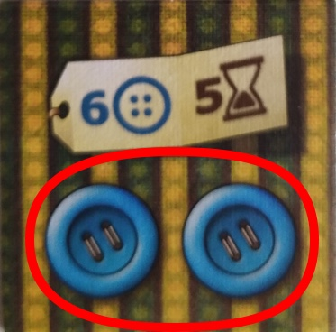

de Uwe Rosenberg
Kings time token is on top of yours or one space behind:
Dummy player buys first patch.
Kings time token is two spaces behind:
Kings time token is three spaces behind:
Kings will advance and you are next.
| 30< | = excellent |
| 25-29 | = really good |
| 18-24 | = average |
| 8-17 | = adequate |
| <9 | = bad |
The Patchwork Master also starts with 5 buttons but he has to pay only the amount of buttons depicted on the label (this means the buttons wich count for you as button income). If he cannot afford any patch, he advances and recieve 1 button for each space he moves his time token.
the player who first reaches the center of the time board earns the special tile.
If it is too hard for you to beat the Patchwork Master use the same rules like in variant II and try another complexity factor as follows: